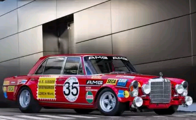

Categories
Here’s a list of our top 10 Mercedes Benz of all time
Ever since two former Mercedes-Benz engineers founded the company in 1967, AMG’s fortunes have been based on one thing only: performance. With performance being the company’s foundation, AMG set out on a mission that its founders, Hans Werner Aufrecht and Erhard Melcher, probably never imagined was possible. That mission focused on becoming one of the world’s most renowned tuning houses with worldwide recognition, that created a tremendous impact on automotive industry.
1971 300 SEL 6.8L AMG “The Red Pig”“The Red Pig” was an aberration in so many ways, but it was also the car that established AMG’s reputation as performance division for years to come. Maybe it doesn’t sound that radical today, but stripping down the Mercedes-Benz’s pride and joy, the S Class predecessor 300 SEL to its bare bones, was a big deal back then. Moreover, nicknaming it “The Red Pig”! That really took some balls on Aufrecht’s and Melcher’s part. But they’ve done more than simply tuning the world’s fastest sedan of the time. Regular 300 SEL was powered by 247-horsepower 6.3L M100 V8 capable of topping 142 mph and clocking 0 to 60 in 6.3 seconds. Impressive figures for 1968 luxury sedan weighing almost 4,000 pounds. Aufrecht and Melcher first increased the engine’s displacement to 6.8L. Then they added pretty much new everything including the camshafts, pistons, intakes, etc. Power gained from such an undertaking read 428 hp and 448 lb-ft of torque. Although they also added aluminum doors, in bizarre fashion, Aufrecht and Melcher had decided to keep the original rear bench seat, wood trim and other unnecessary details. I say unnecessary because “The Red Pig” was intended for 24 Hours of Spa race. And it still weighed over 3,600 pounds. |
|---|
1974 300 SL Gullwing AMGMost people still consider this to be a travesty. There were precious few who didn’t think that way back in 1974 when AMG first decided to proceed this way. But what did they do to irk so many classic car enthusiasts’ feelings? They completely dismantled and resto modded the iconic Mercedes-Benz 300 SL Gullwing. You just don’t mess with the legend that world’s first supercar was. Apparently, that didn’t work for the AMG, and that’s another reason why they’ve succeeded. They were willing to take the risk despite popular opinion. In other words, they went the “zero fucks given” way. |
|---|
1986-1990 W124 “The Hammer”The E Class, W124 Mercedes-Benzes were already some of the most desirable models made by the Stuttgart-based manufacturer, but they wouldn’t have been complete without AMG sticking their fingers into them. Hence they yet again stripped the executive Mercs of their heart and soul and gave them new, improved ones. This time, the chose the 5.0L V8 out of the early W126 S Class models. This setup delivered 340 hp in regular and 355 hp in bored 5.4L form. It was only available during 1986 and 1987 when “The Hammer” became even more ludicrous. This is when AMG introduced the 5.6L 32-valve DOHC V8 from the 560SEC. This engine generated 360 hp at first, but the bored out 6.0L version of the mill managed 385 hp. It also managed a top speed of almost 190 mph, with a low 5-second 0 to 60 time. |
|---|
1995-1997 C36 AMGAlthough AMG was already in the business for a long time by then, there are still a few firsts surrounding the C36 AMG. It was the first performance-oriented C Class model ever and the first mass produced AMG-tuned venture at the same time. During three years of production, around 5,200 of them have been made. Only 200 of them, however, were exported to the US. Mercedes-Benz and AMG were involved in joint venture by then, and C36 AMG was devised as an answer to BMW M3 (E36). Ironically, it was AMG’s dabbling with the 190E in mid eighties that spawned the M3 in first place. |
|---|
1997-1999 CLK GTRThe Mercedes-Benz CLK GTR was born out of necessity for top tier racing car. When DTM touring car racing series folded in 1996, Mercedes-Benz was left without top series to compete in. They called upon AMG and tuning division responded promptly. Responded by creating the most expensive car ever made up until then. With the price tag north of $1.5 million and performance to match, CLK GTR gave Mercedes-Benz a chance to hit its arch rivals in McLaren, Porsche and Ferrari. It would enter the FIA GT Championship in 1997 and win it all in its inaugural year. |
|---|
1999-2001 SL 73 AMGSL 73 AMG is the most evil and one of the latest R129 SL Class roadsters made. Moreover, it’s also one of the baddest and best AMG conversions ever done. In order to get one almost 20 years ago, you first had to order already expensive SL600 from your local Mercedes-Benz dealer. After handing it over to AMG, together with additional $50,000 or so, you had to wait in order for German tuners to work their magic. AMG bored the 6.0L engine to 7.3L displacement which churned out as much as 518 hp and 553 lb-ft of torque. Good enough figures for any V12 engine. Especially back in the day. |
|---|
2007 R63 AMGMercedes-Benz R Class was a definition oddball by itself. Not really a minivan and not quite an SUV, car that Germans liked to call a sports tourer, still weighted close to 5,300 pounds. Then AMG got involved and conventional R Class cars suddenly became plain old conservatives compared to the R63. We’ll list it as a power wagon, and powerful it was indeed. Motivated by naturally aspirated 6.2L V8, R63 developed as much as 507 horsepower. 7-speed automatic transmission and all-wheel drive were also mandatory equipment. Sports tourer needed only 4.6 seconds in order to reach 60 mph from standstill. |
|---|
2005-2012 G55 AMG KompressorPrecious few vehicles in the world are as visually imposing as the G Wagen. Especially considering Mercedes-Benz’s stylistic design history and commitment to excellence in terms of refinement. At first glance, G Wagen has none of it. On closer inspection, however, it has it all. And when AMG started upgrading them, G Wagens gained always welcome third dimension; performance. Not that they weren’t powerful without AMG’s additional tuning, but from 2005 to 2007, they generated 469 horsepower. That same 5.4L supercharged V8 would deliver 500 horsepower as of 2008. |
|---|
 2010-2015 SLS AMGAfter more than 55 years, Mercedes-Benz finally decided to revive the iconic 300 SL Gullwing. And since AMG already dabbled with the original, tuning division was chosen as revival model’s harbinger. Not only that. For more than 40 years of excellence, Mercedes-Benz awarded AMG with their very first clean-sheet design. Enter the Mercedes-Benz SLS AMG: a supercar of highest pedigree in both refinement and performance departments. The 6.2L M159 V8 engine with 563 horsepower was chosen as its motivating factor. Although the engine remained unchanged throughout supercar’s run, the power output grew as special editions piled up. In 2012, GT version of the SLS produced 583 hp, while Coupé Black Series from 2013 yielded as much as 622 hp. That’s still nothing compared to 2013 Coupé Electric Drive which featured 4 synchronous electric motors and 60 kWh lithium-ion battery pack for total 740 hp and 738 lb-ft of torque. |
|---|
2015-Present AMG GTAlthough SLS AMG didn’t get a direct successor, that doesn’t mean Merc’s most important tuner stopped producing their own sports cars. Once they tasted blood, there would be no stopping them. They used favorable reviews and momentum behind the SLS in order to create the GT. AMG GT isn’t as powerful as the SLS was, but it still packs quite a bite. Powered by 4.0L M178 twin-turbo V8, basic version develops 456 horsepower. GT S, which was introduced straightaway, raised that to 503 horsepower. That, however, isn’t all from AMG GT. Although still early in its life, it currently boasts two additional high output editions, the 2016 GT R and 2016 GT3. First of the two gets the same engine as its predecessors, but offers way more in terms of horsepower. 577 horses, to be more precise. Racing version GT3, on the other hand, finds motivation behind naturally aspirated 6.2L M159 V8 with 622 ponies. Although more powerful than GT R, track-only GT3 is still slower. However, it’s also lighter due to its carbon fiber frame, and Mercedes-Benz is planning a street-legal version of the car sometimes soon. Moreover, they’re also planning a 4-door version of the sports car. |
|---|
 Ferrari
Ferrari Honda
Honda Ford
Ford Suzuki
Suzuki Lamborghini
Lamborghini Lexus
Lexus Jaguar
Jaguar BMW
BMW GMC
GMC Mercedes-Benz
Mercedes-Benz